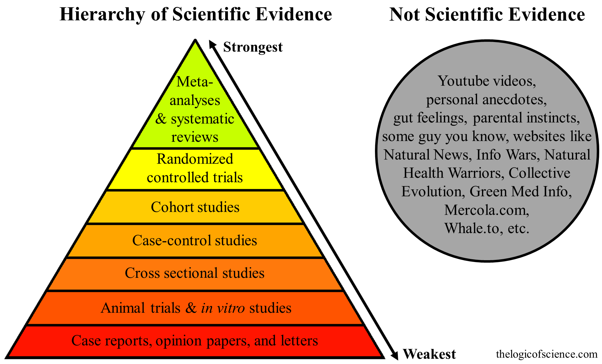

Claim: Many Youtubers and celebrities have tried veganism but they were forced to quit
Details
Several youtubers or other celebrities have quit veganism. Therefore veganism is unhealthy.
Problems With This Argument
1. Anecdotal evidence isn't evidence.

In many cases, it's not clear that they were following a well-planned vegan diet. For instance, some of these celebrities state clearly that they are doing a completely raw vegan diet or are doing. Again, eating nothing but blended lettuce is technically vegan as much as it is keto or paleo. But this isn't representative of vegan diets in general and tells you nothing about the healthfulness of a well-planned vegan diet.
Someone tried something and claims to have feel good. That tells us nothing because of confounding factors such as the placebo/nocebo effects, people who enjoy meat but are too sheepish to admit it so they blame it on health, or just plain blatantly lying for clout. So, a biased trial of N=1 with no controls and no expert or even scientific input is not great evidence in general for anything, and certainly doesn't qualify as scientific evidence.
Many of these celebrities also try other diets like the carnivore diet or paleo or keto. What should we make of the fact that they quit those diets as well? Also when someone goes vegan they quit the omnivore diet. Does that mean that the omnivorous diet is unhealthy? I mean something must have made them quit eating like that. So this is as much an argument for veganism as it is against veganism.
2. This disagrees with the scientific consensus
There is no magical nutrient you can get on a non-vegan diet that you cannot get on a vegan diet. The dietetics community recognizes this and therefore chooses to ignore the aforementioned biased uncontrolled N=1 trials of people clamoring for clout.
3. Specific Celebrities
Some ex-vegans lean on blatantly pseudoscientific or bad reasoning. Here are some "former vegans" and the claims they make:
- Yovana "Rawvana" Mendoza as a "Former vegan". She is a youtuber that was consuming a 1000-calorie-a-day diet on a raw vegan diet. She claims her eyes became greener while she was vegan. Had to give up since she was essentially starving herself to death. So, not great evidence of anything regarding the scientific consensus of vegan diets.
- Earth Mama Medicine makes a ton of pseudoscientific claims and has a full debunk here. Again, not great evidence.
- Alyse "Raw Alignment" Parker claims to have been suffering from health problems and was instantly cured by one piece of salmon. There's no way one undigested piece of salmon released any quantity of nutrients that "reversed her brain fog" when conditions like that take 14-60 days to see an alleviation of symptoms. Again, not great evidence for anything beyond the placebo effect. She later admitted in a video that she gets too emotionally invested in her food consumption and overanalyzes her symptoms.
- Tim Shieff claimed that he starved himself for 30 days drinking nothing but water, then ate a single piece of salmon, had a wet dream, and ejaculated for the first time in three months. Therefore, veganism is unhealthy. I'll leave that there.
- Bonnie Rebecca visited a naturopath and was told by a pseudoscience peddler to follow pseudoscientific advice.
- Maddie Lymburner was vegan for seven years and then suddenly had symptoms "out of nowhere". Again, at the time she was changing a lot of things in her life including the starting of her MadFit program. So, again, completely uncontrolled, but also, if you use someone that had no problems for seven years then you can't possibly claim that you tried eating vegan for a week and almost died.
Again, does anyone on this list stand out as a knock-down argument against veganism or a well-planned vegan diet? This seems like "I tried crying into a plate of blended lettuce for a month and felt like shit". This low-quality anecdotal evidence doesn't come even close to providing justification for anything at all. Other celebs are just vague about their medical conditions and their concerns. With all of these
- Jon Venus, along with the others listed here, has a history of yo-yo dieting. He doesn't cite what nutrients he thought he wasn't getting but he claims he had some muscle cramps that got better after reintroducing animal products. No mention of even anything clear. However, he then went ahead and went vegan again. So it was such a bad diet he wanted to go back to it. So this isn't any strong evidence of anything.
- Sam Harris was a vegetarian for some vague amount of time, and was concerned he wasn't getting enough protein, "amongst other things". He "felt better" after eating meat again. Not clear what he was eating or how he was not getting enough protein.
- Miley Cyrus was "concerned about her brain health" and therefore started eating animal products. Again, not clear what is going on there, but if you're concerned about Omega 3s take a supplement.
In the rare case that someone has a documented medical condition, their positions remain somewhat confusing. Alex O'Connor, aka "CosmicSkeptic" and his IBS journey into and out of veganism got a full discussion from Danny Ishay (aka "Lifting Vegan Logic") here. (Danny himself suffers from Crohn's disease and therefore has a lot of intelligent things to say on the topic). To summarize:
- Alex had sporadic symptoms, that would come and go seemingly randomly, and seems to have attributed them to his recent switch to veganism, but then also had some symptoms before veganism and after veganism.
- he didn't seem to consult any experts on his symptoms or journal out what it was that specifically caused his symptoms.
- he could have easily managed or worked around his symptoms if he felt strongly enough about it, as Danny discusses.
- he seemed to waffle on animal rights months before his announced deconversion, using a circular response to "name the trait" which was that they have inherently fewer rights. This includes also his discussion with Mikhaila Peterson where he seemed to express some odd ideas regarding animal rights as well.
- he then continues to repeat that this has nothing to do with veganism, he had a lot of other personal stuff going on, and veganism isn't to blame... but this is why he's stopping veganism.
So it's a confusing position that he's presented. But again, even if this was a knock-down argument that veganism didn't work for Alex, could never work for Alex, Alex's symptoms correlated with his veganism, and that he was 100% committed to it on ethical grounds, it would still represent a single uncontrolled trial with one participant, multiple confounding factors, and little clarity. Feel bad for the guy, but this isn't evidence of anything.
It's worth also mentioning that situations where someone is struggling with a documented medical condition cannot be used to defend meat eating in general, and even if you suffer from a similar medical condition, your symptoms and experience could be completely different and therefore it also can't be used to justify anyone else's carnism.
Related Claims
Sources
[Claim: Many Youtubers and celebrities have tried veganism but they were forced to quit](http://www.carnist.cc/celebquit)